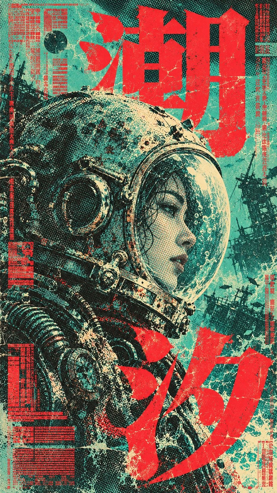
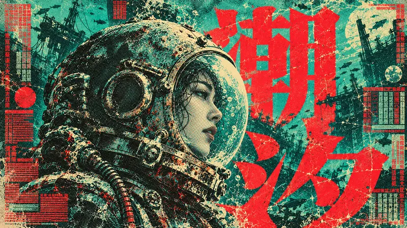
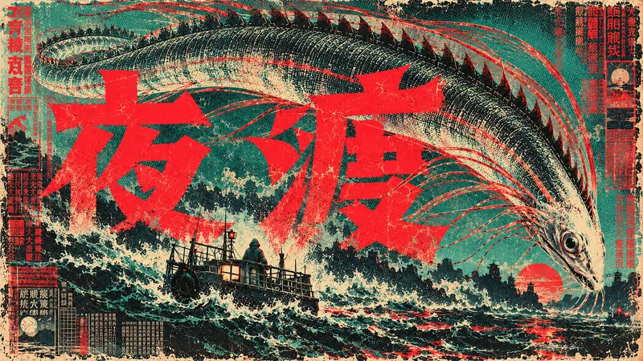
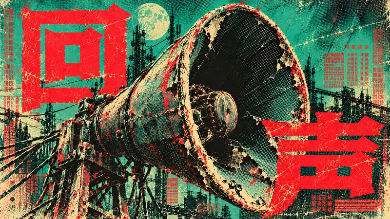
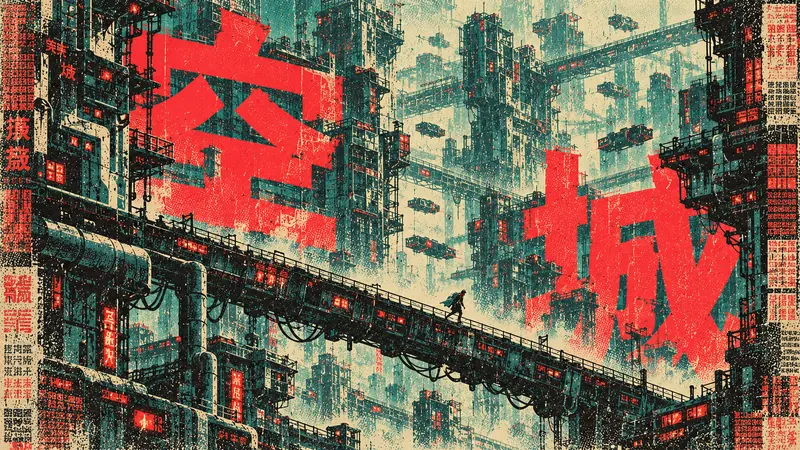

Type Posters · AI image style prompt
Vermilion Jade Halftone
Teal-green paper sci-fi film posters with giant vermilion CJK title glyphs, cream highlights and ink-black halftone, keeping occlusion, misregistration and print wear.

4 example cases
Same style.json, different subjects. Each case's values are in the examples section of the JSON.




What this style does
High-density sci-fi film poster language built from teal-green paper, giant vermilion title glyphs, cream highlights and ink-black halftone; it keeps occlusion, misregistration and wear while reorganizing the layout around new stories at different scales.
Signature traits
- Use faded jade and turquoise grounds, hot vermilion type, near-black petrol shadows and butter-paper highlights as separated printing inks.
- Model dimensional subjects with visible coarse halftone dots and compressed tonal bands instead of smooth digital shading.
- Make oversized heavy CJK glyphs and the subject occlude one another while the exact primary title remains recognizable.
- Keep nearly the entire sheet active with overlapping image, typography and marginal texture-text planes.
- Preserve ink loss, scratched broken edges, modest plate misregistration and dense damaged caption blocks.
- Change silhouette, camera distance and perspective to express each new narrative.
style.json
{
"schema_version": "2.2",
"style_name": "Vermilion Jade Halftone",
"style_version": "1.0.0",
"category": "Type Posters",
"style_slug": "vermilion-jade-halftone",
"style_summary": "High-density sci-fi film poster language built from teal-green paper, giant vermilion title glyphs, cream highlights and ink-black halftone; it keeps occlusion, misregistration and wear while reorganizing the layout around new stories at different scales.",
"environment_variables": {
"ASPECT_RATIO": "9:16 or 16:9. Recompose for the selected ratio.",
"STYLE_FIDELITY_ANCHORS": "Runtime joined CORE then FLEX anchors.",
"SOURCE_CONTENT_TO_AVOID": "Runtime joined source exclusions.",
"SUBJECT": "Concrete original character, creature, object or environment for the fictional film.",
"MAIN_TEXT": "Exact two-character CJK film title; primary text.",
"DESIGN_DIRECTION": "Theme-driven hierarchy and separate portrait/landscape composition intentions."
},
"style_fidelity_anchors": [
"[CORE] Use faded jade and turquoise grounds, hot vermilion type, near-black petrol shadows and butter-paper highlights as separated printing inks.",
"[CORE] Model dimensional subjects with visible coarse halftone dots and compressed tonal bands instead of smooth digital shading.",
"[CORE] Make oversized heavy CJK glyphs and the subject occlude one another while the exact primary title remains recognizable.",
"[CORE] Keep nearly the entire sheet active with overlapping image, typography and marginal texture-text planes.",
"[CORE] Preserve ink loss, scratched broken edges, modest plate misregistration and dense damaged caption blocks.",
"[FLEX] Change silhouette, camera distance and perspective to express each new narrative.",
"[FLEX] Arrange the title vertically, laterally, split or overprinted according to the subject and ratio.",
"[FLEX] Vary dark and cream ink coverage while keeping the jade-vermilion opposition dominant."
],
"source_content_to_avoid": [
"The white bob-haired blindfolded android and its distinctive character identity.",
"The black gothic puff-sleeved dress and rear three-quarter figure pose.",
"The diagonal katana and sword-bearing combat premise.",
"The original headline, exact page layout, seals, creator marks, logos and watermarks."
],
"visual_deconstruction": {
"genre": "Distressed CJK speculative-fiction film/key-art poster.",
"hierarchy": "Massive red glyphs compete with a dimensional, tightly cropped subject. Small text is surface rhythm.",
"negative_space": "Minimal; quiet areas retain colored paper and visible printing patterns.",
"energy": {
"density": "Essential: matches near-full active surface with huge glyphs, subject and dense marginal text.",
"layering": "Essential: matches or exceeds three visibly overlapping image, type and print-texture planes.",
"disorder": "Essential: matches moderate ink loss, rough boundaries and plate misregistration; not randomized collage debris.",
"tension": "Essential: matches cropped scale collisions, asymmetry and subject/type competition."
}
},
"composition": {
"system": "One dominant narrative form, enormous CJK type and marginal print matter interlock. The focal structure changes for every case.",
"ratio_adaptation": "Portrait favors vertical mass or plunging space. Landscape expands lateral movement and redistributes type; do not crop the portrait mechanically.",
"freedom": "Title location, subject crop, camera angle and ink coverage are case-dependent."
},
"typography": {
"primary": "Two-character title in massive heavy display CJK forms, blocky counters, short wedge-like terminals and distressed red edges. Readable despite deliberate partial occlusion.",
"texture": "Dense fictional credit blocks, small vertical captions, digits and broken rules are graphic matter; they may repeat, fade or be unreadable. Avoid copied seals and recognizable marks.",
"relationship": "Type may sit behind, overprint or traverse the image; avoid a tidy headline/subtitle/footer template."
},
"color_palette": {
"jade": "#65B79D — dominant worn ground",
"turquoise": "#268F84 — middle ink tone",
"vermilion": "#F04450 — aggressive title and select overprint",
"petrol_black": "#173632 — structural shadows",
"paper_cream": "#DCD3A0 — limited bright form"
},
"image_treatment": {
"process": "Dimensional semi-realistic illustration reduced to rough screen-print separations.",
"texture": "Visible coarse round/irregular halftones, roughly 1–4 pixels at the 736-pixel reference width, following tonal form; medium-heavy on the subject and background. Moderate abrasion and ink loss on red glyphs, thin misregistration at selected edges and mottled aged-paper softness are intentional. Do not substitute uniformly sprayed noise or polished gradients.",
"lighting": "Hard directional cream light and broad near-black shadows; retain tactile form under the print process."
},
"design_rules": [
"Maintain the jade-vermilion opposition and a small shared ink vocabulary.",
"Keep primary titles exact while allowing decorative texture text to fragment.",
"Require meaningful subject/type occlusion and active peripheral print matter.",
"Give every case a distinct silhouette and narrative scale.",
"Recompose each ratio with its specified title/image interaction."
],
"do": [
"Use coarse dots as tonal structure.",
"Allow clipped silhouettes, uneven alignments and worn overprint.",
"Let story meaning change scale and typography placement."
],
"avoid": [
"Clean vector poster surfaces or smooth gradient rendering.",
"Repeated centered hero plus neatly separated title layouts.",
"Copied original character, sword, identity marks or source headline."
],
"prompt_template": "Create a finished {ASPECT_RATIO} CJK speculative-fiction film poster. Faded jade paper, hot red woodblock-like title masses, cream highlights and deep petrol shadows collide in dense, worn halftone printing. Preserve an almost fully active sheet, physical image/type occlusion and abrasive print energy.\n{STYLE_FIDELITY_ANCHORS}\nSubject: {SUBJECT}\nArt direction and ratio plan: {DESIGN_DIRECTION}\nPrimary title, spelled exactly: “{MAIN_TEXT}”. Make both characters readable at viewing size despite partial overlap. Marginal vertical captions, fictional credits, numbers and broken rules are texture text: dense, distressed, partly unreadable graphic material. Resolve the new story with an intentional focal shape, not a repeated centered template.\nExclude source content: {SOURCE_CONTENT_TO_AVOID}\nAvoid polished CGI, smooth vector fill, spacious grids, English slogans, copied logos and watermarks.",
"negative_prompt": "Smooth CGI; clean vector flatness; evenly spaced grid; sparse luxury layout; English imperative slogans; repeated centered figure; original android, dress or katana; copied source headline or identity marks; watermark; illegible primary title.",
"examples": [
{
"case_name": "tidal-diver",
"values": {
"SUBJECT": "An adult East Asian woman salvage diver in a battered spherical diving helmet and bulky pressure collar, seen in tight side profile; the visor frames a calm face, oxidized metal catches cream light.",
"MAIN_TEXT": "潮汐",
"DESIGN_DIRECTION": "Make the helmet a trapped pale moon against a heavy dark shoulder, with red characters partly behind the helmet and cutting across the lower collar. Portrait: towering helmet/profile close-up with descending title. Landscape: broad lateral helmet profile against two oversized offset title masses; crop the shoulder hard."
}
},
{
"case_name": "serpent-ferry",
"values": {
"SUBJECT": "A gigantic ribbon-shaped oarfish with a dark ridged spine and pale bony head bends over a tiny working ferry carrying one hooded pilot on black water; uncanny scale, no gore.",
"MAIN_TEXT": "夜渡",
"DESIGN_DIRECTION": "Let the serpent thread between the red glyphs so their apertures feel like dangerous gates. Portrait: long descending S-curve, tiny ferry near a low crossing. Landscape: arch the head and serpentine body across the full width above the off-center boat; keep the background dense with inked current patterns."
}
},
{
"case_name": "echo-relic",
"values": {
"SUBJECT": "A single antique industrial horn loudspeaker, torn paper cone, chipped ceramic throat, exposed coil and cracked metal bell, dramatically foreshortened; no human figure.",
"MAIN_TEXT": "回声",
"DESIGN_DIRECTION": "The black cone is a visual abyss: red title strokes overlap its rim and broken membranes while the title remains readable. Portrait: enormous diagonal mouth, barrel clipped by an edge. Landscape: stretch the bell and barrel sideways, place the two glyphs at competing scales across and behind the mouth. Keep it cinematic, never a clean product advertisement."
}
},
{
"case_name": "hollow-city",
"values": {
"SUBJECT": "An impossible dense brutalist megacity of stacked service towers, bridge ducts and window cells, with one minute rain-caped courier crossing a precarious bridge.",
"MAIN_TEXT": "空城",
"DESIGN_DIRECTION": "Bold case: push scale jumps and overprint beyond the reference; building-sized vermilion characters cut in front of and disappear behind architecture. Portrait: plunge through a narrow vertical urban chasm. Landscape: compressed city wall across the frame cut by a diagonal elevated bridge. Make the tiny courier a barely spared light silhouette; the glyphs remain readable and visibly collide with concrete."
}
}
]
}